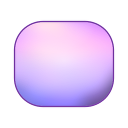
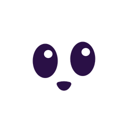
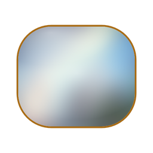
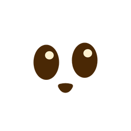

<!doctype html>
<!-- boards.html?b=<id> — round 27 boards: the remaining theme icons, the tray icon, the Mac menu bar,
     and how the icon behaves under macOS 26's Liquid Glass. Every icon here is a picture from out/
     (shot by shoot-icons.sh from icons.html), so what Destin sees is the real render, not a stand-in.
     WHY the Mac pictures are labelled "approximate": Liquid Glass is drawn by macOS itself from our
     layers; only a Mac running macOS 26 shows the exact result. -->
<meta charset="utf-8">
<link href="../src8/fonts/fonts.css" rel="stylesheet">
<link href="../src9/fonts/fonts.css" rel="stylesheet">
<style>
  html, body { margin:0; width:1200px; height:700px; overflow:hidden; background:#F7F4FA; font-family:'Outfit', system-ui, sans-serif; color:#21152C; }
  * { box-sizing:border-box; }
  h1 { margin:0; position:absolute; left:24px; top:14px; font-size:22px; font-weight:600; letter-spacing:-.02em; }
  .sub { position:absolute; left:24px; top:42px; font-size:13px; color:#6d5f7a; }
  .lab { font-size:13px; font-weight:600; }
  .note { font-size:11.5px; color:#7a6d86; }
  .px { image-rendering:pixelated; }
  .abs { position:absolute; }
  .card { position:absolute; background:#fff; border-radius:14px; box-shadow:0 1px 3px rgba(40,20,60,.12); }
  .chip { display:inline-block; padding:2px 8px; border-radius:99px; background:#EFE6F6; font-size:11px; font-weight:600; color:#6B3D96; }
  /* taskbar strips */
  .bar { position:relative; height:40px; display:flex; align-items:center; gap:10px; padding:0 12px; border-radius:8px; }
  .bar.wd { background:#1f1f1f; color:#fff; } .bar.wl { background:#eeeeee; color:#111; } .bar.kd { background:#1e1f22; color:#eee; }
  .bar svg.g { width:16px; height:16px; opacity:.9; }
  .clock { font:11px/1.15 'Segoe UI', system-ui, sans-serif; text-align:right; margin-left:2px; }
  .dot { position:absolute; width:9px; height:9px; border-radius:50%; background:#E5484D; box-shadow:0 0 0 1.5px currentColor; }
  /* Mac menu bar */
  .mbar { position:relative; height:28px; display:flex; align-items:center; justify-content:flex-end; gap:14px; padding:0 14px; font:13px -apple-system, system-ui, sans-serif; border-radius:6px; overflow:hidden; }
  /* Liquid Glass simulation */
  .sq { position:absolute; border-radius:22.4%; overflow:hidden; }
  .spec { position:absolute; inset:0; border-radius:inherit; box-shadow: inset 0 1.5px 0 rgba(255,255,255,.9), inset 0 0 0 1px rgba(255,255,255,.35), inset 0 -2px 4px rgba(0,0,0,.08); pointer-events:none; }
  .lay { position:absolute; inset:0; width:100%; height:100%; }
  .desk { position:absolute; border-radius:14px; overflow:hidden; }
  .desk .wp { position:absolute; inset:-10%; background:url(walls/cotton-candy-sky.jpg) center/cover; filter:blur(6px) saturate(1.1); }
  .dock { position:absolute; left:50%; transform:translateX(-50%); bottom:12px; display:flex; gap:10px; padding:8px 10px; border-radius:22px;
          background:rgba(255,255,255,.28); backdrop-filter:blur(14px) saturate(1.6); box-shadow:inset 0 1px 0 rgba(255,255,255,.6), 0 4px 16px rgba(30,10,50,.25); }
  .dock.dk { background:rgba(30,26,40,.4); }
</style>
<body><div id="r"></div>
<script>
const P = new URLSearchParams(location.search), B = P.get('b') || 'themes';
const img = (src, w, extra = '') => ``;
const R = document.getElementById('r');
// Simple grey tray glyphs (wifi, speaker, battery) so our icon is seen among real neighbours.
const G = {
  wifi: `<svg class="g" viewBox="0 0 16 16"><path d="M1.5 6a9.5 9.5 0 0 1 13 0M4 8.6a6 6 0 0 1 8 0M6.4 11.1a2.6 2.6 0 0 1 3.2 0" fill="none" stroke="currentColor" stroke-width="1.4" stroke-linecap="round"/><circle cx="8" cy="13.2" r="1" fill="currentColor"/></svg>`,
  vol: `<svg class="g" viewBox="0 0 16 16"><path d="M2 6h2.5L8 3v10L4.5 10H2z" fill="currentColor"/><path d="M10.5 5.5a3.5 3.5 0 0 1 0 5M12.3 3.7a6 6 0 0 1 0 8.6" fill="none" stroke="currentColor" stroke-width="1.3" stroke-linecap="round"/></svg>`,
  bat: `<svg class="g" viewBox="0 0 16 16"><rect x="1.5" y="4.5" width="11.5" height="7" rx="1.6" fill="none" stroke="currentColor" stroke-width="1.2"/><rect x="3" y="6" width="7" height="4" rx=".6" fill="currentColor"/><rect x="13.6" y="6.6" width="1.3" height="2.8" rx=".5" fill="currentColor"/></svg>`,
};
const clock = `<div class="clock">10:42 AM<br>10/4/2026</div>`, clockS = `<div class="clock">10:42</div>`;
// A Windows-style tray strip at 150% scaling (24px icons), the common laptop setting.
function strip(kind, icon, alert = false, size = 24, narrow = false) {
  return `<div class="bar ${kind}" style="${narrow ? 'gap:8px;padding:0 9px' : ''}">${G.wifi}${G.vol}${narrow ? '' : G.bat}<div style="position:relative;width:${size}px;height:${size}px">${img(icon, size)}${alert ? `<div class="dot" style="right:-3px;top:-3px;color:${kind === 'wl' ? '#eee' : '#1f1f1f'}"></div>` : ''}</div>${narrow ? clockS : clock}</div>`;
}
// macOS one-colour ("template") menu-bar icon: the face's outline with eyes and smile cut out.
// WHY one colour: Apple asks menu-bar icons to be a single colour so macOS can flip them black/white with the bar.
function tmpl(h, color, spark = false) {
  const w = h * 14 / 12;
  return `<svg width="${w}" height="${h}" viewBox="0 0 14 12"><defs><mask id="m${h}${color.slice(1)}"><rect width="14" height="12" rx="4" fill="#fff"/>` +
    `<ellipse cx="4.3" cy="5.55" rx="1.6" ry="2.2" fill="#000"/><ellipse cx="9.7" cy="5.25" rx="1.6" ry="2.2" fill="#000"/>` +
    `<path d="M5.6 8.7 Q7 8.35 8.4 8.7 Q8.9 8.85 8.7 9.3 Q8 10.6 7 10.6 Q6 10.6 5.3 9.3 Q5.1 8.85 5.6 8.7Z" fill="#000"/></mask></defs>` +
    `<rect width="14" height="12" rx="4" fill="${color}" mask="url(#m${h}${color.slice(1)})"/>` +
    // WHY the sparkles stay: without the little highlight in each eye the cut-out face read as hollow and scary (round 27).
    (spark ? `<circle cx="4.85" cy="4.65" r=".62" fill="${color}"/><circle cx="10.25" cy="4.35" r=".62" fill="${color}"/>` : '') + `</svg>`;
}
const TH = [['purple', 'Default'], ['golden', 'Golden Sunbreak'], ['kuromi', 'Kuromi Dreamer'], ['morning', 'Morning Rounds']];

// The Mac's four icon looks, applied to our layered icon (approximate), for theme t.
function glassIcon(s, mode, t = 'purple') {
  const bg = { def: 'linear-gradient(165deg,#FBF6FD,#E9DCF2)', dark: 'linear-gradient(165deg,#2E2638,#141019)', clear: 'rgba(255,255,255,.16)', tint: 'linear-gradient(165deg,#1E2C44,#0F1726)' }[mode];
  const pf = { def: '', dark: 'filter:brightness(.92)', clear: 'filter:grayscale(1) brightness(1.55) contrast(.8);opacity:.6', tint: 'filter:grayscale(1) sepia(1) hue-rotate(178deg) saturate(2.6) brightness(.95)' }[mode];
  const ff = { def: '', dark: '', clear: 'filter:grayscale(1) brightness(.5);opacity:.55', tint: 'filter:grayscale(1) sepia(1) hue-rotate(178deg) saturate(3) brightness(.55)' }[mode];
  return `<div class="sq" style="width:${s}px;height:${s}px;position:relative;background:${bg}">` +
    `<div class="spec"></div></div>`;
}
const neighbours = (m, s = 52) => [0, 1, 2].map(j => `<div class="sq" style="position:relative;width:${s}px;height:${s}px;background:${m === 'clear' ? 'rgba(255,255,255,.22)' : m === 'tint' ? 'linear-gradient(165deg,#22324C,#111a2b)' : m === 'dark' ? 'linear-gradient(165deg,#3a3a40,#1c1c20)' : ['linear-gradient(165deg,#5BA8FF,#2D6BE0)', 'linear-gradient(165deg,#FFD15C,#F29A1F)', 'linear-gradient(165deg,#7BE08F,#2FA84F)'][j]}"><div class="spec"></div></div>`).join('');
const BOARDS = {
  // ---------- round 28: the Dock "middle" ----------
  dockmid: () => {
    const looks = [['def', 'Default', '#F2EEF6', false], ['dark', 'Dark', '#1A1520', true], ['clear', 'Clear', null, false], ['tint', 'Tinted', '#0D1420', true]];
    const rows = [['A', 'As picked: never swap', m => glassIcon(56, m, 'golden')], ['B', 'Theme face on clear glass', () => img('mid1-golden-64.png', 56)], ['C', 'Theme face on lightly tinted glass', () => img('mid2-golden-64.png', 56)]];
    return `<h1>Mac Dock with a theme on (Golden Sunbreak): meet in the middle?</h1><div class="sub">B and C keep the theme's face but swap the white tile for see-through glass we draw ourselves. Each row in the Mac's four looks. Approximate.</div>` +
      rows.map(([k, l, ours], r) => `<div class="abs lab" style="left:24px;top:${84 + r * 204}px;width:150px;font-size:15px">${k}<br><span class="note" style="font-weight:400;font-size:12.5px">${l}</span>${r === 0 ? '<br><span class="note">(Golden face hidden in the Dock; default glass icon shown)</span>' : ''}</div>` +
        looks.map(([m, n, bg, dk], c) => `<div class="desk" style="left:${180 + c * 252}px;top:${76 + r * 204}px;width:240px;height:192px;${bg ? `background:${bg}` : ''}">${bg ? '' : '<div class="wp"></div>'}` +
          `<div class="abs note" style="left:12px;top:10px;color:${dk || !bg ? '#fff' : '#21152C'}">${n}</div>` +
          `<div class="dock ${dk ? 'dk' : ''}" style="bottom:40px;gap:8px;padding:7px 8px">${neighbours(m, 38)}${r === 0 ? glassIcon(56, m, 'purple') : ours(m)}</div></div>`).join('')).join('');
  },
  menubar2: () => {
    const bar = (bg, fg) => `<div class="mbar" style="background:${bg};color:${fg};margin-bottom:8px;width:420px"><span>${G.wifi.replace('class="g"', 'class="g" style="width:15px;height:15px"')}</span><span style="display:flex;align-items:center">${tmpl(15, fg, true)}</span><span>Sat Oct 4  10:42 AM</span></div>`;
    return `<h1>Mac menu bar, one colour — with the eye sparkles kept</h1><div class="sub">Real size on a light and a dark menu bar, then enlarged. Left: last round's, for comparison.</div>` +
      `<div class="card" style="left:24px;top:74px;width:1152px;height:602px">` +
      `<div class="abs" style="left:30px;top:24px"><div class="lab">Last round (no sparkles)</div><div style="display:flex;gap:24px;margin-top:14px"><div style="background:#f4f2f6;padding:16px;border-radius:12px">${tmpl(110, '#111')}</div><div style="background:#1b1a1f;padding:16px;border-radius:12px">${tmpl(110, '#f2f2f2')}</div></div></div>` +
      `<div class="abs" style="left:520px;top:24px"><div class="lab">Sparkles kept</div><div style="display:flex;gap:24px;margin-top:14px"><div style="background:#f4f2f6;padding:16px;border-radius:12px">${tmpl(110, '#111', true)}</div><div style="background:#1b1a1f;padding:16px;border-radius:12px">${tmpl(110, '#f2f2f2', true)}</div></div></div>` +
      `<div class="abs" style="left:30px;top:300px"><div class="note" style="margin-bottom:8px">Real size</div>${bar('linear-gradient(90deg,rgba(250,248,252,.72),rgba(250,248,252,.72)),url(walls/cotton-candy-sky.jpg) center/cover', '#111')}${bar('rgba(24,22,28,.86)', '#f2f2f2')}` +
      `<div class="note" style="margin:18px 0 8px">Twice real size</div><div style="transform:scale(2);transform-origin:0 0;width:420px">${bar('linear-gradient(90deg,rgba(250,248,252,.72),rgba(250,248,252,.72)),url(walls/cotton-candy-sky.jpg) center/cover', '#111')}${bar('rgba(24,22,28,.86)', '#f2f2f2')}</div></div></div>`;
  },
  // ---------- every marketplace theme's app icon ----------
  themes: () => {
    const list = [['cotton', 'Cotton Candy Sky', 'the default icon'], ['golden', 'Golden Sunbreak', 'approved'], ['meadow', 'Meadow Mist', 'approved'], ['strawberry', 'Strawberry Kitty', 'approved'],
      ['kuromi', 'Kuromi Dreamer', 'approved'], ['devils', "Devil's Garden", 'approved'], ['halftone', 'Halftone Dimension', 'new'], ['morning', 'Morning Rounds', 'new']];
    return `<h1>Every marketplace theme's app icon</h1><div class="sub">Big, then taskbar sizes (32px and 16px, true pixels). Halftone and Morning Rounds are new; each has a second option on its own page.</div>` +
      list.map(([t, n, s], i) => { const x = 24 + (i % 4) * 291, y = 74 + Math.floor(i / 4) * 308;
        return `<div class="card" style="left:${x}px;top:${y}px;width:279px;height:296px">` +
          `<div class="abs" style="left:16px;top:14px"><div class="lab">${n}</div><span class="chip" style="${s === 'new' ? 'background:#FFE3E8;color:#B8264A' : ''}">${s}</span></div>` +
          `<div class="abs" style="left:16px;top:76px">${img(`trT-${t === 'cotton' ? 'purple' : t}-160.png`, 160)}</div>` +
          `<div class="abs" style="left:196px;top:110px">${img(`trT-${t === 'cotton' ? 'purple' : t}-32.png`, 32, 'image-rendering:auto')}</div>` +
          `<div class="abs" style="left:204px;top:166px">${img(`trT-${t === 'cotton' ? 'purple' : t}-16.png`, 16)}</div>` +
          `<div class="abs" style="left:236px;top:110px;width:40px;height:72px;background:#1f1f1f;border-radius:6px"><div class="abs" style="left:8px;top:8px">${img(`trT-${t === 'cotton' ? 'purple' : t}-24.png`, 24)}</div><div class="abs" style="left:12px;top:44px">${img(`trT-${t === 'cotton' ? 'purple' : t}-16.png`, 16)}</div></div>` +
          `</div>`; }).join('');
  },
  // ---------- one theme, two options ----------
  pair: () => {
    const t = P.get('t'), opts = t === 'halftone'
      ? [['trT-halftone', 'A  Same recipe as the others', 'Light frosted tile, light face, dark eyes, hot-pink rim.'], ['hdN-halftone', "B  Halftone's own night look", 'Dark tile and face, glowing cyan eyes and smile, like its buddy.']]
      : [['trT-morning', 'A  Same recipe as the others', 'The plain face in the theme\'s cream and carnelian.'], ['mrE-morning', 'B  With the dog\'s ears', 'Its buddy is a dog: the two floppy ears fold over the corners.']];
    const name = t === 'halftone' ? 'Halftone Dimension' : 'Morning Rounds';
    return `<h1>${name}: which icon?</h1><div class="sub">Each shown big, at taskbar sizes, and on a dark and a light taskbar.</div>` +
      opts.map(([f, l, d], i) => `<div class="card" style="left:${24 + i * 582}px;top:74px;width:570px;height:602px">` +
        `<div class="abs" style="left:20px;top:16px"><div class="lab" style="font-size:16px">${l}</div><div class="note">${d}</div></div>` +
        `<div class="abs" style="left:20px;top:70px">${img(`${f}-256.png`, 256)}</div>` +
        `<div class="abs" style="left:300px;top:90px">${img(`${f}-64.png`, 64)}</div><div class="abs" style="left:384px;top:106px">${img(`${f}-32.png`, 32)}</div><div class="abs" style="left:432px;top:114px">${img(`${f}-16.png`, 16)}</div>` +
        `<div class="abs" style="left:300px;top:190px;width:250px">${strip('wd', `${f}-24.png`)}<div style="height:10px"></div>${strip('wl', `${f}-24.png`)}</div>` +
        `<div class="abs note" style="left:300px;top:300px;width:240px">Taskbar strips at 150% scaling, the usual laptop setting.</div>` +
        `<div class="desk" style="left:20px;top:350px;width:530px;height:230px"><div class="wp" style="background-image:url(walls/${t === 'halftone' ? 'halftone-dimension' : 'morning-rounds'}.jpg)"></div>` +
        `<div class="dock">${['#8C8C96', '#6F8FB8', '#B88F6F'].map(c => `<div style="width:64px;height:64px;border-radius:22.4%;background:linear-gradient(160deg,${c},#4a4a52)"></div>`).join('')}${img(`${f}-64.png`, 64)}</div>` +
        `<div class="abs note" style="left:12px;top:10px;color:#fff;text-shadow:0 1px 2px #000">In a Dock, over the theme's own picture</div></div>` +
        `</div>`).join('');
  },
  // ---------- Liquid Glass: the layers, then the four Mac looks ----------
  glass: () => {
    const layer = (inner, label, x) => `<div class="abs" style="left:${x}px;top:22px;text-align:center;width:150px"><div style="width:130px;height:130px;margin:0 auto;border-radius:16px;background:repeating-conic-gradient(#eee 0 25%,#fff 0 50%) 0 0/16px 16px;position:relative;overflow:hidden">${inner}</div><div class="note" style="margin-top:6px">${label}</div></div>`;
    const full = (s, mode) => {
      const bg = { def: 'linear-gradient(165deg,#FBF6FD,#E9DCF2)', dark: 'linear-gradient(165deg,#2E2638,#141019)', clear: 'rgba(255,255,255,.16)', tint: 'linear-gradient(165deg,#1E2C44,#0F1726)' }[mode];
      const pf = { def: '', dark: 'filter:brightness(.92)', clear: 'filter:grayscale(1) brightness(1.55) contrast(.8);opacity:.6', tint: 'filter:grayscale(1) sepia(1) hue-rotate(178deg) saturate(2.6) brightness(.95)' }[mode];
      const ff = { def: '', dark: '', clear: 'filter:grayscale(1) brightness(.5);opacity:.55', tint: 'filter:grayscale(1) sepia(1) hue-rotate(178deg) saturate(3) brightness(.55)' }[mode];
      return `<div class="sq" style="width:${s}px;height:${s}px;position:relative;background:${bg};${mode === 'clear' ? 'backdrop-filter:blur(10px) saturate(1.4);' : ''}box-shadow:0 6px 14px rgba(20,5,40,.3)">` +
        `<div class="spec"></div></div>`;
    };
    const modes = [['def', 'Default', '#F2EEF6', false], ['dark', 'Dark', '#1A1520', true], ['clear', 'Clear', null, false], ['tint', 'Tinted (blue chosen)', '#0D1420', true]];
    return `<h1>The app icon on a Mac with Liquid Glass</h1><div class="sub">macOS 26 builds the icon from layers and adds the glass shine and shadow itself. Bottom row: the four looks a Mac user can pick. Approximate — only a real Mac shows the exact result.</div>` +
      `<div class="card" style="left:24px;top:76px;width:1152px;height:196px">` +
      layer(`<div class="lay" style="background:linear-gradient(165deg,#FBF6FD,#E9DCF2)"></div>`, '1  Background: white-lavender', 20) +
      `<div class="abs" style="left:176px;top:72px;font-size:22px;color:#b9a8c8">+</div>` +
      layer(``, '2  Face: the theme picture, blurred', 196) +
      `<div class="abs" style="left:352px;top:72px;font-size:22px;color:#b9a8c8">+</div>` +
      layer(``, '3  Eyes and smile', 372) +
      `<div class="abs" style="left:532px;top:66px;font-size:26px;color:#b9a8c8">→</div>` +
      `<div class="abs" style="left:580px;top:16px;width:150px;text-align:center"><div style="display:inline-block">${full(130, 'def')}</div><div class="note" style="margin-top:6px">Mac adds glass edge, light, shadow</div></div>` +
      `<div class="abs note" style="left:760px;top:40px;width:370px;font-size:13px;line-height:1.45;color:#4f4160">` +
      `<b style="color:#21152C">Same design as the approved icon</b>, split into the three layers Apple's icon format wants. ` +
      `The Mac then draws its own glass on top, moves the shine with the light, and re-colours the layers when the user picks Dark, Clear or Tinted.<br><br>` +
      `Older Macs (before macOS 26) get today's flat version of the same design automatically.</div></div>` +
      modes.map(([m, l, bg, dk], i) => `<div class="desk" style="left:${24 + i * 291}px;top:288px;width:279px;height:388px;${bg ? `background:${bg}` : ''}">` +
        (bg ? '' : `<div class="wp"></div>`) +
        `<div class="abs lab" style="left:16px;top:14px;color:${dk || !bg ? '#fff' : '#21152C'};${!bg ? 'text-shadow:0 1px 3px rgba(0,0,0,.4)' : ''}">${l}</div>` +
        `<div class="abs" style="left:64px;top:70px">${full(150, m)}</div>` +
        `<div class="dock ${dk ? 'dk' : ''}">${[0, 1, 2].map(j => `<div class="sq" style="position:relative;width:52px;height:52px;background:${m === 'clear' ? 'rgba(255,255,255,.22)' : m === 'tint' ? 'linear-gradient(165deg,#22324C,#111a2b)' : m === 'dark' ? 'linear-gradient(165deg,#3a3a40,#1c1c20)' : ['linear-gradient(165deg,#5BA8FF,#2D6BE0)', 'linear-gradient(165deg,#FFD15C,#F29A1F)', 'linear-gradient(165deg,#7BE08F,#2FA84F)'][j]}"><div class="spec"></div></div>`).join('')}${full(52, m)}</div></div>`).join('');
  },
  // ---------- the Dock while a theme is on ----------
  dockswap: () => {
    const nb = (m) => [0, 1, 2].map(j => `<div class="sq" style="position:relative;width:56px;height:56px;background:${m === 'clear' ? 'rgba(255,255,255,.22)' : 'linear-gradient(165deg,#22324C,#111a2b)'}"><div class="spec"></div></div>`).join('');
    const glassOurs = (m) => `<div class="sq" style="position:relative;width:56px;height:56px;background:${m === 'clear' ? 'rgba(255,255,255,.16)' : 'linear-gradient(165deg,#1E2C44,#0F1726)'}">` +
      `<div class="spec"></div></div>`;
    const row = (m, y, label) => [['A', 'Keep Liquid Glass (no theme picture in the Dock)', glassOurs(m)], ['B', 'Swap in the theme\'s icon', img('trT-golden-64.png', 56)]].map(([k, l, ours], i) =>
      `<div class="desk" style="left:${24 + i * 582}px;top:${y}px;width:570px;height:280px;${m === 'tint' ? 'background:#0D1420' : ''}">${m === 'clear' ? '<div class="wp"></div>' : ''}` +
      `<div class="abs lab" style="left:16px;top:14px;color:#fff;text-shadow:0 1px 3px rgba(0,0,0,.4)">${label} · ${k}  ${l}</div>` +
      `<div class="dock ${m === 'tint' ? 'dk' : ''}" style="bottom:70px">${nb(m)}${ours}</div>` +
      `<div class="abs note" style="left:16px;bottom:16px;color:#fff;opacity:.85;width:520px">${i ? 'Ours stays full colour and flat while every other icon is ' + (m === 'clear' ? 'clear glass.' : 'tinted.') : 'Ours follows the Mac look like every other app; the Golden theme does not show in the Dock.'}</div></div>`).join('');
    return `<h1>The Dock while a theme is on (Golden Sunbreak shown)</h1><div class="sub">Only matters for Mac users who picked the Clear or Tinted look. In Default and Dark, a swapped theme icon looks fine. Approximate.</div>` +
      row('clear', 76, 'Clear look') + row('tint', 396, 'Tinted look');
  },
  // ---------- tray icon ----------
  tray: () => {
    const cols = [['trF', 'A  The face alone', 'Fills the little square; biggest eyes.'], ['trB', "B  Today's shape, new face", 'Body, arms and legs like today\'s, in the new face.'], ['trT', 'C  The app icon, shrunk', 'Same picture as the taskbar button.']];
    return `<h1>Tray icon: which picture, now that it follows the theme?</h1><div class="sub">Windows taskbar, dark and light, at 150% scaling. Linux panels look like the dark one. The last row shows the red "needs you" dot.</div>` +
      cols.map(([id, l, d], i) => `<div class="card" style="left:${24 + i * 388}px;top:74px;width:376px;height:602px">` +
        `<div class="abs" style="left:16px;top:14px"><div class="lab" style="font-size:15px">${l}</div><div class="note">${d}</div></div>` +
        `<div class="abs" style="left:16px;top:62px;display:flex;gap:8px;align-items:center">${img(`${id}-purple-64.png`, 64)}<span class="note">big, for reference</span></div>` +
        TH.map(([t, n], j) => `<div class="abs" style="left:16px;top:${140 + j * 86}px;width:344px"><div class="note" style="margin-bottom:3px">${n}</div><div style="display:flex;gap:8px">` +
          `<div style="flex:1">${strip('wd', `${id}-${t}-24.png`, false, 24, true)}</div><div style="flex:1">${strip('wl', `${id}-${t}-24.png`, false, 24, true)}</div></div></div>`).join('') +
        `<div class="abs" style="left:16px;top:${140 + 4 * 86}px;width:344px"><div class="note" style="margin-bottom:3px">Needs you (default theme)</div><div style="display:flex;gap:8px"><div style="flex:1">${strip('wd', `${id}-purple-24.png`, true, 24, true)}</div><div style="flex:1">${strip('wl', `${id}-purple-24.png`, true, 24, true)}</div></div></div>` +
        `</div>`).join('');
  },
  // ---------- Mac menu bar ----------
  menubar: () => {
    const bars = (kind, icon) => [['light', 'linear-gradient(90deg,rgba(250,248,252,.72),rgba(250,248,252,.72)),url(walls/cotton-candy-sky.jpg) center/cover', '#111'], ['dark', 'rgba(24,22,28,.86)', '#f2f2f2']].map(([n, bg, fg]) =>
      `<div class="mbar" style="background:${bg};color:${fg};margin-bottom:8px"><span style="opacity:.9">${G.wifi.replace('class="g"', 'class="g" style="width:15px;height:15px"')}</span>` +
      `<span style="display:flex;align-items:center">${kind === 'tmpl' ? tmpl(15, fg) : ``}</span><span>Sat Oct 4  10:42 AM</span></div>`).join('');
    return `<h1>Mac menu bar: one colour, or the theme's colours?</h1><div class="sub">Shown at real size on a light and a dark menu bar. The shape follows whichever tray picture you pick on the previous page (the face is shown).</div>` +
      [['tmpl', 'A  One colour, like Apple\'s own icons', 'Black on a light bar, white on a dark one. Never changes with the theme.'], ['col', 'B  Full colour, follows the theme', 'Same picture as Windows and Linux.']].map(([k, l, d], i) =>
        `<div class="card" style="left:${24 + i * 582}px;top:74px;width:570px;height:602px"><div class="abs" style="left:20px;top:16px"><div class="lab" style="font-size:16px">${l}</div><div class="note">${d}</div></div>` +
        `<div class="abs" style="left:20px;top:80px;width:530px">` +
        (k === 'tmpl' ? `<div class="note" style="margin-bottom:6px">Any theme</div>${bars('tmpl')}<div style="display:flex;gap:30px;margin-top:30px;align-items:center"><div style="background:#f4f2f6;padding:18px;border-radius:12px">${tmpl(96, '#111')}</div><div style="background:#1b1a1f;padding:18px;border-radius:12px">${tmpl(96, '#f2f2f2')}</div><span class="note">enlarged</span></div>`
          : ['purple', 'golden', 'kuromi'].map(t => `<div class="note" style="margin-bottom:6px">${{ purple: 'Default', golden: 'Golden Sunbreak', kuromi: 'Kuromi Dreamer' }[t]}</div>${bars('col', `trF-${t}-20.png`)}`).join('')) +
        `</div></div>`).join('');
  },
};
R.innerHTML = BOARDS[B]();
</script>
</body>
